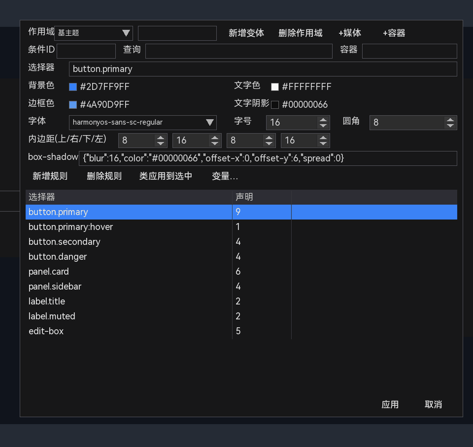
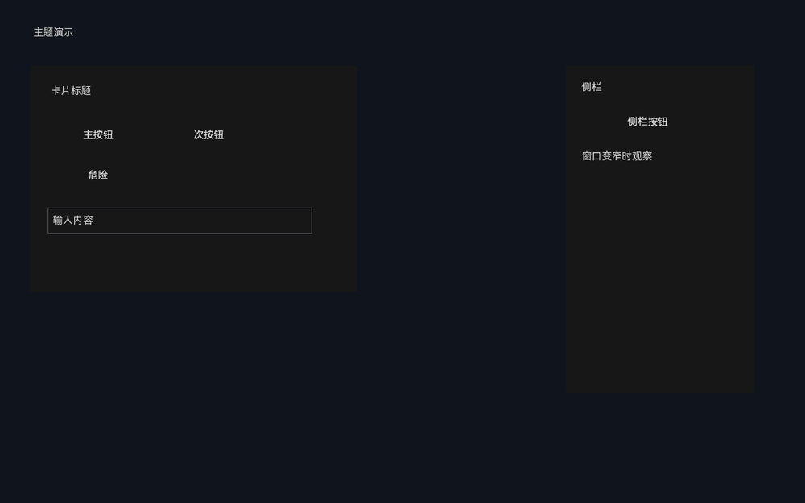
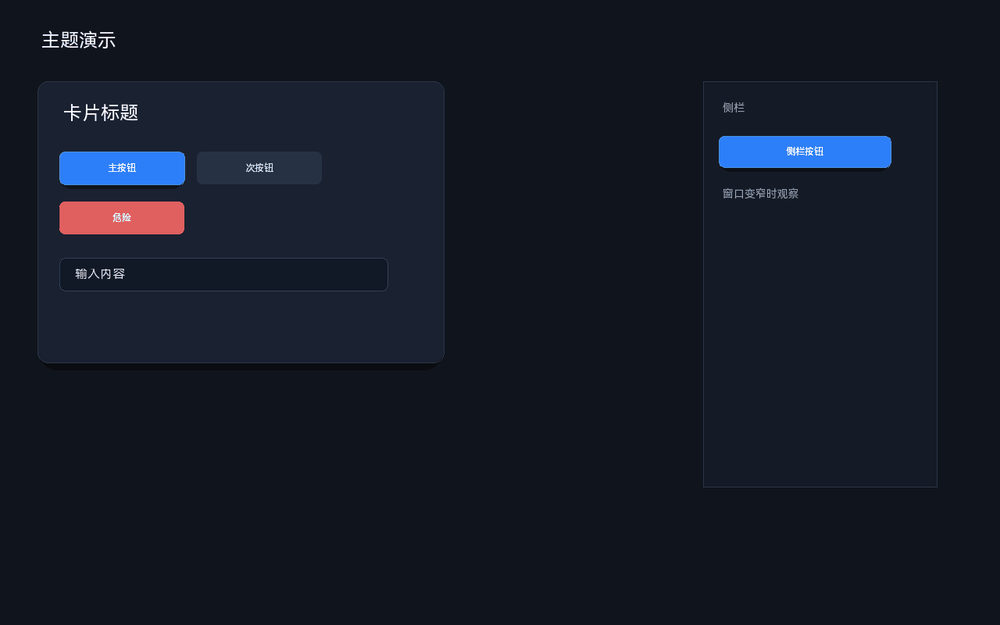
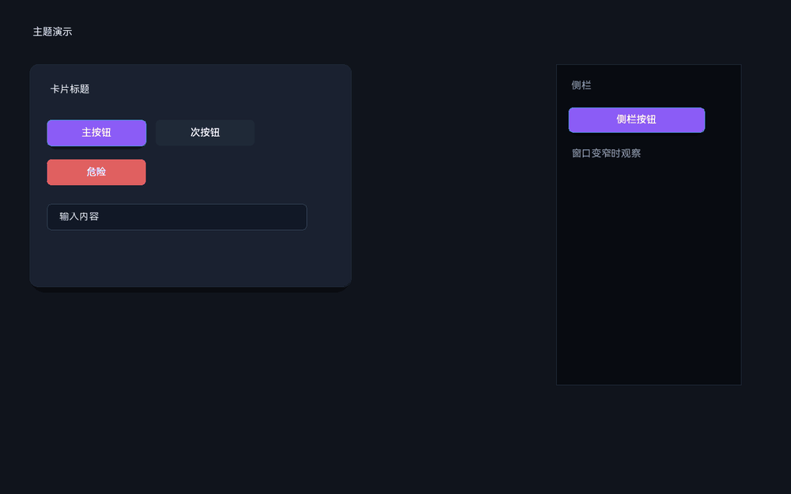
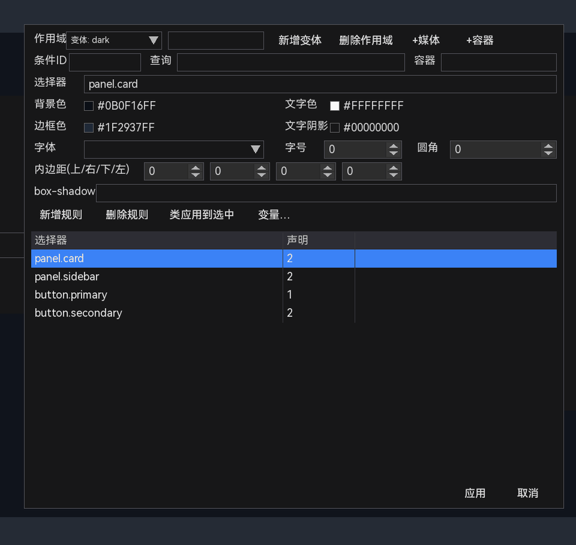
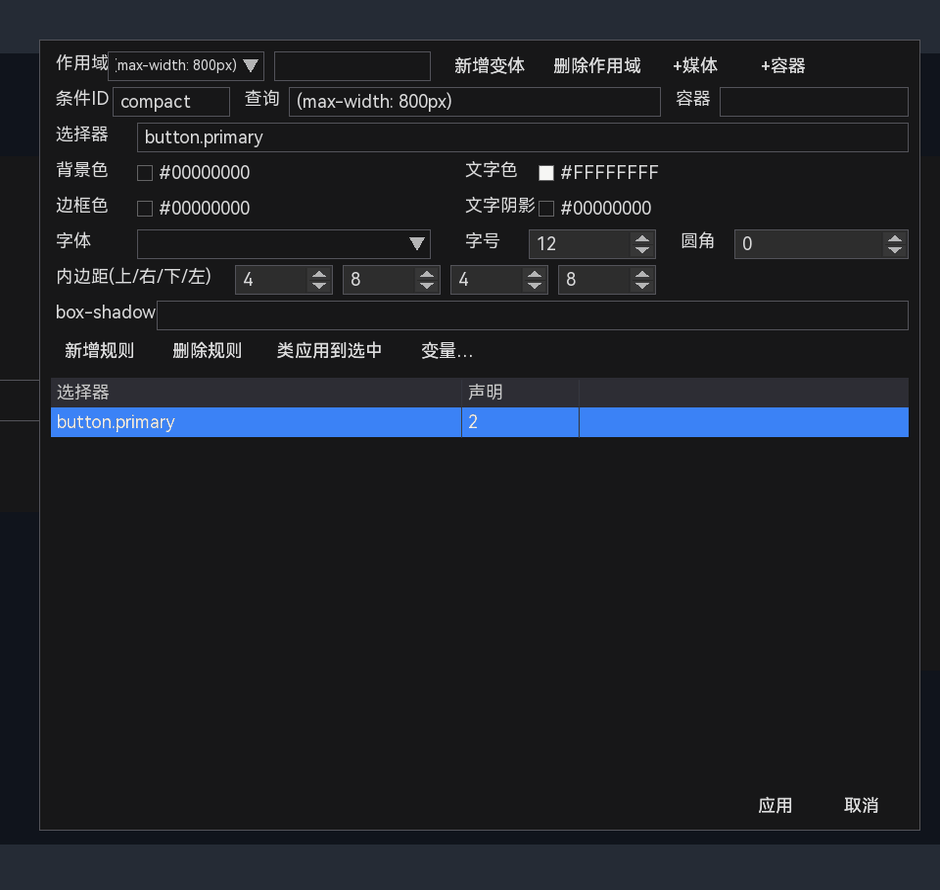
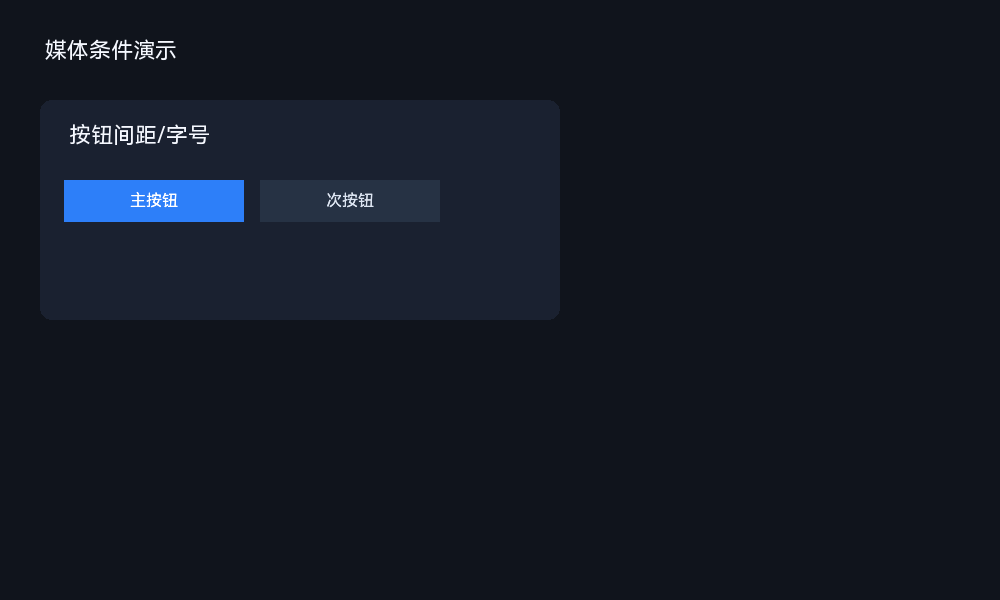
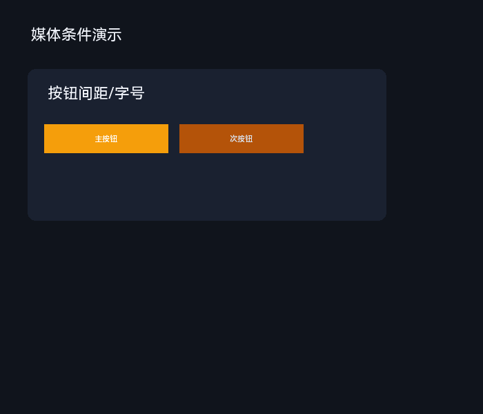

15 主题系统
主题用于统一控件外观：颜色、字体、圆角、间距、阴影，以及窗口变窄、容器变小、切换深色模式时的变化。它解决的是“同一个样式要改很多控件”的问题。
designer_theme.json 控制，见 15.14。
15.1 先理解：主题能帮你做什么
假设画布上有 20 个按钮，都使用主色。没有主题时，主色从蓝色改成绿色，需要逐个选中按钮、逐个改颜色。使用主题后：
- 定义一个变量
--primary，或者一条规则button.primary； - 给 20 个按钮都加上
primary类； - 以后只需要改规则的背景色，20 个按钮一起变化。
主题不改变控件的位置和大小，只改变样式属性。布局仍然由画布上的位置、尺寸、容器和对齐决定。
15.2 六个核心概念
| 概念 | 通俗含义 | 例子 |
|---|---|---|
| 变量 | 给一个值起名字，后面反复使用 | --primary = #4A90D9 |
| 选择器 | 这条规则作用到哪些控件 | button.primary |
| 声明 | 具体要改什么属性、改成什么值 | background: #4A90D9 |
| 规则 | “选择器 + 一组声明” | button.primary { background: ... } |
| 类（class） | 给控件贴的标签，供选择器匹配 | 按钮的 classes = ["primary"] |
| 作用域 | 规则放在哪一层：基础、变体、媒体或容器 | 基主题 / dark / 窄窗口 / 侧栏 |
另外两个概念是：
- 变体：在基础主题之上叠加的一套命名样式，例如
dark。切换变体时，基础规则仍然保留，变体规则覆盖同名属性。 - 条件：媒体条件（窗口宽度/高度/方向）或容器条件（某个祖先容器的尺寸）满足时，额外叠加规则。
15.3 第一次使用主题：给按钮换色
下面按顺序做一遍。完成后你会得到：基主题、类、按钮规则、悬停规则，并能在预览中看到效果。
- 新建工程，从工具箱放置一个 Button，文本改成“保存”。
- 选中按钮，点击右侧“事件”旁边的“属性”，确认没有手动改过它的背景色。显式属性会覆盖主题。
- 打开 。
- 在“作用域”保持“基主题”。
- 在“选择器”输入
button.primary。 - “背景色”填
#2D7FF9FF，“文字色”填#FFFFFFFF。 - “边框色”填
#4A90D9FF，“文字阴影”填#00000066。 - “字体”下拉选择
harmonyos-sans-sc-regular；“字号”填16；“圆角”填8。 - “内边距(上/右/下/左)”填
8、16、8、16。 - “box-shadow”填下面这个 JSON 对象：
{"color":"#00000066","offset-x":0,"offset-y":6,"blur":16,"spread":0} - 点击“新增规则”。下方规则列表出现
button.primary，声明数为 9。 - 保持按钮在画布中被选中，回到主题管理器，点击“类应用到选中”。按钮会获得
primary类。 - 再新增一条规则：选择器
button.primary:hover，背景色改成更亮的#4A90D9FF，点击“新增规则”。 - 点击“应用”关闭管理器，按 F5 打开预览，把鼠标移到按钮上。
此时你应该看到：按钮常态是蓝色，悬停变亮。回到画布后，按钮本身的位置、大小、文本都不变，只是外观来自主题。
15.3.1 全部设置项填写完成
下面是完成上述步骤后的主题管理器。可以看到选择器、背景色、文字色、边框色、文字阴影、字体、字号、圆角、四边内边距和 box-shadow 都已经有值；下方规则列表同时保留了常态和悬停规则。

15.3.2 套用前后的效果对比


这两张图来自同一个布局，只差“有没有项目主题”。按钮的位置、大小、文字没有改变，改变的是背景、文字、边框、圆角和内边距。
15.4 主题管理器逐项说明
作用域
| 选项 | 含义 | 什么时候用 |
|---|---|---|
| 基主题 | 所有控件默认使用的规则 | 普通颜色、字体、圆角、主按钮 |
| 变体: 名称 | 叠加在基主题之上的命名样式 | 深色模式、品牌主题、紧凑模式 |
| 媒体: 名称 | 窗口尺寸/方向满足时叠加 | 窗口变窄、横屏/竖屏切换 |
| 容器: 名称 | 某个祖先容器尺寸满足时叠加 | 侧栏变窄后隐藏文字、缩小按钮 |
条件字段
| 作用域 | 条件ID | 查询 | 容器 |
|---|---|---|---|
| 基主题 | 禁用 | 禁用 | 禁用 |
| 变体 | 禁用 | 禁用 | 禁用 |
| 媒体 | compact | (max-width: 800px) 或 {"max-width": 800} | 禁用 |
| 容器 | narrow | {"max-width": 280} | panel.sidebar |
compact、narrow 只是示例；你也可以写 mobile、tablet、side_small。真正决定条件是否命中的是“查询”和“容器”，不是 ID。建议同一工程内保持唯一，方便在作用域下拉和 GetActiveMedia() 结果中辨认。“条件ID”“查询”“容器”只在作用域是媒体或容器时启用：
- 条件ID：给条件起名，方便识别；可以是
compact、mobile等任意名称，不是固定选项。 - 查询：条件表达式，例如
(max-width: 800px)。 - 容器：只用于容器条件，写祖先选择器，例如
panel.sidebar。
新增作用域
| 目标 | 操作 | 新增后发生什么 |
|---|---|---|
| 变体 | 在“新增变体”左侧输入名称，点击“新增变体” | 创建空变体并切换作用域；基主题规则继续生效 |
| 媒体条件 | 点击“+媒体” | 创建默认媒体条件并切换；条件ID/查询启用 |
| 容器条件 | 点击“+容器” | 创建默认容器条件并切换；条件ID/查询/容器启用 |
| 删除 | 选中对应作用域，点击“删除作用域” | 删除该变体/条件及其规则；基主题不能删除 |
哪些可以随便命名，哪些必须按规则写
主题里同时存在“名字”和“语法”。名字是给人和日志看的，可以自己起；选择器、声明、查询是语法，必须按固定格式写；枚举项只能从给定值中选择。
| 字段/内容 | 能否随意命名 | 规则与建议 |
|---|---|---|
| 条件 ID（媒体/容器） | 可以 | 任意可读名称；不是固定枚举。compact/narrow 只是示例；建议唯一，使用英文、数字、下划线。 |
| 变体名 | 可以 | 非空、不能重复；用于运行时 SetThemeVariant("dark")，建议使用英文/数字/下划线。 |
| 类名（class） | 可以 | 建议只用字母、数字、_、-；一个控件可加多个类，选择器里写 .primary。 |
| 控件 ID | 可以，但应唯一 | 供事件、代码和 FindControl 引用；建议英文/数字/下划线，不要空格。 |
| 变量名 | 部分自由 | 变量编辑器会自动补 --；建议 --primary、--surface。引用时写 var(--primary)。 |
| 选择器 | 不能随意 | 只能写类型、类、ID、状态和简单组合；不支持空格后代、逗号、属性选择器、!important。 |
| 媒体/容器查询 | 不能随意 | 使用固定键：min-width/max-width/min-height/max-height/orientation/min-scale/max-scale；值写数字或字符串。 |
| 容器字段 | 不能随意 | 只能写简单的祖先选择器：类型、类、ID 或组合，例如 panel.sidebar；不能写后代选择器。 |
| 声明键 | 不能随意 | 使用文档支持的键：background、text-color、font-size、border-radius、content-padding、box-shadow 等；控件专有键以 schema 为准。 |
| 字体名称 | 从列表选择 | 使用主题管理器字体下拉中的名称，或引擎支持的字体枚举名；不是任意字体文件路径。 |
| 字体样式 | 固定枚举 | normal / bold / italic / underline / strikethrough。 |
| 颜色值 | 固定格式 | #RRGGBB、#RRGGBBAA、rgb()、rgba() 或颜色名。 |
| box-shadow 字段名 | 固定 | color、offset-x、offset-y、blur、spread；值必须是 JSON 对象。 |
| 作用域下拉 | 只能选现有项 | 基主题、已有变体、已有媒体条件、已有容器条件；不能手写未知作用域。 |
选择器与属性表单
| 控件 | 含义 |
|---|---|
| 选择器 | 规则匹配的控件，见 15.5 |
| 背景色 / 文字色 / 边框色 / 文字阴影 | 规则的颜色声明；当前表单编辑的是常态值 |
| 字体 / 字号 / 圆角 | 字体名、字号 px、圆角 px |
| 内边距(上/右/下/左) | 控件内容区的内边距，写入 content-padding |
| box-shadow | 需要填写 JSON 对象，见 15.6.4 |
按钮
| 按钮 | 作用 |
|---|---|
| 新增规则 | 把当前选择器和属性保存为一条新规则 |
| 删除规则 | 删除规则列表中选中的规则 |
| 类应用到选中 | 从当前选择器的 .类名 提取类，追加到画布选中控件 |
| 变量… | 打开变量编辑器，定义/删除变量 |
| 新增变体 | 创建命名变体并切换到该作用域 |
| 删除作用域 | 删除当前变体/媒体/容器；基主题不能删 |
| +媒体 / +容器 | 在基主题下创建默认条件 |
| 应用 / 取消 | 应用并关闭 / 放弃本次草稿 |
15.5 选择器：主题作用到谁
选择器语法是 CSS 的一个很小子集。先掌握下面几种就够了：
| 写法 | 匹配 | 适合 |
|---|---|---|
button | 所有按钮 | 统一按钮基础样式 |
.primary | 所有带 primary 类的控件 | 跨控件复用同一种标签 |
button.primary | 同时是按钮且带 primary 类 | 主按钮 |
#saveBtn | ID 为 saveBtn 的控件 | 只改一个特定控件 |
button.primary:hover | 主按钮在悬停状态 | 悬停变色 |
label.title | 带 title 类的标签 | 标题字体 |
* | 所有参与主题的控件 | 谨慎使用，影响范围最大 |
优先级
- ID 选择器
#saveBtn - 类 选择器
.primary - 类型 选择器
button - 同权重按规则添加顺序，后面的覆盖前面的
如果同一个控件同时命中多条规则，按优先级和顺序层叠；但属性面板里显式设置的值永远高于主题。
常见错误
- 写
button .primary（中间有空格）：V1 不支持后代选择器。应写button.primary。 - 选择器写
.primary但控件没有primary类：不会匹配。先分配类。 - 把悬停规则写成
button.primary:hover但字段里改的是常态背景色：检查规则列表选中的是不是悬停规则。 - 使用逗号
button, label、属性选择器或!important：当前版本不支持，拆成多条规则。
15.6 声明：具体改什么
15.6.1 颜色和状态
颜色写法支持 #RRGGBB、#RRGGBBAA、rgb(...)、rgba(...) 和常用颜色名。设计器取色器通常写出 8 位十六进制。
| 声明 | 作用 |
|---|---|
background | 背景色 |
text-color | 文字色 |
border-color | 边框色 |
text-shadow | 文字阴影颜色；alpha=0 表示关闭 |
控件状态用选择器表达，而不是在同一个规则里写四个颜色：
{ "selector": "button.primary", "declarations": {
"background": "#4A90D9", "text-color": "#FFFFFF" } }
{ "selector": "button.primary:hover", "declarations": {
"background": "#6AA3FF" } }
{ "selector": "button.primary:pressed", "declarations": {
"background": "#3B73D1" } }
{ "selector": "button.primary:disabled", "declarations": {
"background": "#2B3038", "text-color": "#9AA7B8" } }支持 :hover、:pressed、:disabled、:selected。其中 :selected 当前近似使用 pressed 通道。
15.6.2 字体和圆角
font-family：字体枚举名，例如harmonyos-sans-sc-regular。font-size：字号 px。font-style：normal / bold / italic / underline / strikethrough。border-radius：圆角 px。
没有显式字体声明的控件会沿父链继承最近的主题字体；属性面板显式设置的字体/字号会覆盖主题。
15.6.3 内边距
主题声明名可以写 padding 或 content-padding。它改变控件内容区，不改变外框尺寸：
padding: 8 // 四边 8
padding: "8 16" // 上下 8，左右 16
padding: "8 16 8 16" // 上 右 下 左
content-padding: { "left": 16, "top": 8, "right": 16, "bottom": 8 }可视化管理器的“内边距(上/右/下/左)”会写入 content-padding。Dialog 的旧 padding 是 Float 属性，和这里的内容内边距语义不同。
15.6.4 阴影
text-shadow 只需颜色；偏移由 shadow-offset-x / shadow-offset-y 控制。
box-shadow 是控件外框外的一层阴影，用来做“卡片浮起来”的效果。它不是必填项；不需要阴影时留空。
| 字段 | 含义 | 示例 |
|---|---|---|
color | 阴影颜色，最后两位是透明度 | #00000066 |
offset-x | 水平偏移；正数向右 | 0 |
offset-y | 垂直偏移；正数向下 | 6 |
blur | 模糊/圆角扩展量 | 16 |
spread | 阴影扩张量；正数更大 | 0 |
操作步骤：
- 在规则列表选中要加阴影的规则，例如
panel.card。 - 在“box-shadow”输入框中粘贴完整对象文本：
{"color":"#00000066","offset-x":0,"offset-y":6,"blur":16,"spread":0}- 点击“应用”或切换到别的规则，保存这条规则。
- 在预览中查看卡片外框是否出现柔和阴影。
0 6 16 #000 简写。写成字符串、缺少花括号或字段名拼错时，管理器会提示“box-shadow 需要 JSON 对象”，该字段不会按预期保存。图 15-2 的按钮规则中 box-shadow 填的是 {"color":"#00000066","offset-x":0,"offset-y":6,"blur":16,"spread":0}；它会在按钮下方形成一层淡阴影。
当前实现用无高斯模糊的扩展近似：偏移和扩散绘制半透明圆角矩形，blur 作为圆角扩展量参与近似。
15.6.5 控件专有属性
规则也可以写控件自己的属性键，例如：
{ "selector": "list-view", "declarations": {
"header-background": "#202838", "font-size": 14 } }
{ "selector": "progress-bar", "declarations": {
"progress-color": "#22C55E" } }值会按形态尝试颜色、数字或字符串，最终落到控件对应的属性通道。具体键以属性面板和 schema 为准。
15.7 变量：统一改一处
变量用来保存可复用的值。点击主题管理器中的“变量…”：
- 左侧是变量列表，右侧是“变量名”和“值”。
- 点击“新增变量”，自动创建
--var1之类的名字。 - 输入名称和值，例如
--primary/#4A90D9。 - 点击“应用”保存变量；变量会保存在当前工程主题里。
变量定义示例：
{
"variables": {
"--bg": "#10141C",
"--primary": "#2D7FF9",
"--text": "#F5F8FF"
}
}在规则中引用：
{ "selector": "button.primary", "declarations": {
"background": "var(--primary)",
"text-color": "var(--text)" } }var(--primary)，请在 中编辑对应规则；变量编辑器只负责定义变量表。15.8 类：把规则和控件连起来
主题规则不会自动知道“哪个按钮是主按钮”，需要通过类来关联。
分配类
- 在画布或控件树选中一个或多个控件。
- 在主题管理器“选择器”中输入包含类名的选择器，例如
button.primary。 - 点击“类应用到选中”。
- 控件获得类
primary，之后匹配.primary、button.primary等规则。
“类应用到选中”是从选择器中第一个 . 后面提取类名，所以选择器必须写类，例如 button.primary；只写 button 会提示“当前选择器没有类名”。
控件的类也会随布局保存到 JSON：
{ "type": "button", "id": "saveBtn", "classes": ["primary"] }classes 也支持字符串形式 "primary toolbar"。当前管理器只提供“追加类”，没有删除类的按钮；需要移除时可在原始 JSON 中修改控件的 classes。
15.9 变体：深色/浅色切换
变体是在基主题上叠加的命名样式。适合做深色模式、品牌主题或紧凑模式。
- 在主题管理器输入变体名，例如
dark。 - 点击“新增变体”，作用域自动切到“变体: dark”。
- 为深色模式添加规则，例如
panel.card的背景色、label的文字色。 - 点击“应用”。
变体名的格式没有 CSS 限制，但建议使用简短的英文/数字/下划线，例如 dark、compact、brand_A。名称为空会提示“变体名为空”；同名已存在会提示“变体已存在”。新增成功后，作用域下拉会自动切到该变体。

变体只覆盖声明过的属性，所以基主题的圆角和内边距仍然保留。下面的截图来自同一布局，只切换了变体。

变体不需要重复基主题中的所有规则。例如基主题已经设置了按钮圆角，变体只覆盖背景和文字：
{
"variants": {
"dark": {
"variables": { "--surface": "#0B0F16", "--text": "#F5F8FF" },
"styles": [
{ "selector": "panel.card", "declarations": { "background": "var(--surface)" } },
{ "selector": "label", "declarations": { "text-color": "var(--text)" } }
]
}
}
}层序是：基础普通 → 基础媒体 → 基础容器 → 变体普通 → 变体媒体 → 变体容器。运行时切换变体由 UICornerstone API 完成；设计器负责保存/导出变体定义。
15.10 媒体条件：窗口变窄时调整
媒体条件根据视口尺寸匹配，例如窗口宽度小于 800px 时缩小字号。
- 点击“+媒体”。
- 作用域切到新建的媒体条件。
- 编辑“条件ID”和“查询”，例如
compact和(max-width: 800px)。 - 在该作用域新增规则，例如按钮字号 13、内边距 4/8。
- 调整预览窗口大小，观察规则命中。
“+媒体”会自动创建一个条件并切换作用域。新条件的默认 ID 类似 media1，默认查询是 (min-width: 800px)；把 ID 改成 compact 只是便于识别，规则本身不依赖这个名称。查询字段启用后填写：
| 写法 | 示例 | 含义 |
|---|---|---|
| 字符串 | (max-width: 800px) | 视口宽度不超过 800px |
| 字符串 | (min-width: 1200px) | 视口宽度至少 1200px |
| 字符串 | (orientation: portrait) | 竖向视口 |
| 对象 | {"max-width": 800, "orientation": "portrait"} | 多个条件同时满足 |
支持 min-width / max-width / min-height / max-height / orientation / min-scale / max-scale。调节预览窗口大小，或在导出运行时改变窗口尺寸，条件会重新计算。

{
"media": [
{
"id": "compact",
"query": "(max-width: 800px)",
"variables": { "--gap": 8 },
"styles": [
{ "selector": "button.primary", "declarations": {
"background": "#F59E0B", "content-padding": "4 8", "font-size": 13 } },
{ "selector": "button.secondary", "declarations": {
"content-padding": "4 8", "font-size": 13 } }
]
}
]
}查询可以写字符串，也可以写对象：{"max-width": 800, "orientation": "portrait"}。支持 min/max width/height、orientation 和缩放范围。
variants.dark.media。

button.primary，媒体规则只写 button 可能无法覆盖它；需要写同样具体的 button.primary。15.11 容器条件：侧栏变窄时调整
容器条件不是看整个窗口，而是看某个祖先容器的尺寸。典型场景：侧栏 Panel 变窄后，按钮只显示图标或缩小字号。
- 点击“+容器”。
- 编辑“条件ID”，例如
narrow。 - “容器”填祖先选择器，例如
panel.sidebar。 - “查询”填
{"max-width": 280}，或字符串(max-width: 280px)。 - 新增规则，例如
button.primary的背景色、内边距、字号。
“+容器”会自动创建条件并切换作用域。新条件默认 ID 类似 container1，默认容器是 .panel，默认查询是 (max-width: 599px)。实际使用时把“容器”改成真正要观察的祖先，例如：
| 容器写法 | 匹配 |
|---|---|
panel | 任意 Panel 祖先 |
.sidebar | 带 sidebar 类的任意祖先 |
panel.sidebar | 同时是 Panel 且带 sidebar 类 |
#sidePanel | ID 为 sidePanel 的祖先 |
容器选择器只支持简单形式，不支持空格后代选择器或逗号。查询推荐用对象形式 {"max-width": 280}，字符串形式也可用；比较的是容器内容区尺寸。
同样，narrow 只是条件 ID 示例，不是固定值；可以按用途命名，但建议唯一。

{
"containerQueries": [
{
"id": "narrow",
"container": "panel.sidebar",
"query": { "max-width": 280 },
"styles": [
{ "selector": "button.primary", "declarations": {
"background": "#0F766E", "font-size": 11, "content-padding": "3 6" } }
]
}
]
}container 是简单的祖先选择器（类型、类、ID），匹配最近的祖先容器 contentRect。当前 UI 支持编辑 ID、query 和 container 字段。


15.12 完整示例：一套小主题
把下面 JSON 复制到 ，然后应用，即可得到一套带主按钮、卡片和紧凑模式的主题。
{
"variables": {
"--bg": "#10141C",
"--surface": "#1A2130",
"--line": "#2B3648",
"--text": "#F5F8FF",
"--muted": "#94A3B8",
"--primary": "#2D7FF9",
"--danger": "#E06060"
},
"styles": [
{ "selector": "panel.root", "declarations": {
"background": "var(--bg)" } },
{ "selector": "panel.card", "declarations": {
"background": "var(--surface)",
"border-color": "var(--line)",
"border-visible": true,
"border-radius": 14,
"content-padding": "16" } },
{ "selector": "label.title", "declarations": {
"text-color": "var(--text)", "font-size": 24 } },
{ "selector": "label.muted", "declarations": {
"text-color": "var(--muted)", "font-size": 13 } },
{ "selector": "button.primary", "declarations": {
"background": "var(--primary)",
"text-color": "#FFFFFFFF",
"border-radius": 8,
"content-padding": "8 16" } },
{ "selector": "button.primary:hover", "declarations": {
"background": "#4A90D9" } },
{ "selector": "button.danger", "declarations": {
"background": "var(--danger)",
"text-color": "#FFFFFFFF",
"border-radius": 8 } },
{ "selector": "edit-box", "declarations": {
"background": "#111826",
"border-color": "#334155",
"text-color": "var(--text)",
"border-radius": 8,
"content-padding": "10 12" } }
],
"variants": {
"dark": {
"variables": { "--surface": "#0B0F16", "--bg": "#080B11" },
"styles": [
{ "selector": "panel.card", "declarations": { "background": "var(--surface)" } }
]
}
},
"media": [
{
"id": "compact",
"query": "(max-width: 800px)",
"styles": [
{ "selector": "button", "declarations": { "content-padding": "4 8", "font-size": 13 } }
]
}
],
"containerQueries": [
{
"id": "narrow",
"container": "panel.sidebar",
"query": "(max-width: 280px)",
"styles": [
{ "selector": "button", "declarations": { "font-size": 12 } }
]
}
]
}应用后需要在画布上给控件分配类：panel root、panel card、label title、button primary 等。类通过“类应用到选中”或控件的 classes 字段设置。
15.13 常见主题配方
| 目标 | 选择器 | 主要声明 |
|---|---|---|
| 主按钮 | button.primary | background、text-color、border-radius |
| 次按钮 | button.secondary | background 浅灰、border-color |
| 危险按钮 | button.danger | background 红、text-color 白 |
| 卡片 | panel.card | background、border-color、border-radius、box-shadow |
| 输入框 | edit-box | background、border-color、content-padding |
| 标题 | label.title | font-size、text-color、font-style |
| 侧栏紧凑 | panel.sidebar + 容器条件 | font-size、content-padding |
| 深色模式 | 变体 dark | 背景/文字变量覆盖 |
15.14 设计器自身 UI 主题
设计器界面（菜单、工具箱、属性面板）使用另一份主题文件：exe 同目录的 designer_theme.json。它和项目主题完全分离：
- 修改项目主题不会改变设计器界面；
- 修改设计器主题不会影响用户画布、预览和导出；
- 源码文件在
layouts/designer_theme.json，构建时复制到输出目录； - 修改后使用 热重载。
文件缺失或 JSON 非法时只输出诊断，不阻止启动。
15.15 排查：为什么主题没生效
- 看的是设计画布还是预览？ 当前设计画布主要显示显式样式和设计态；请在预览或导出界面看完整主题。
- 控件有类吗？ 规则
button.primary需要控件 classes 含primary。 - 选择器写对了吗？ 不支持空格后代选择器、逗号分组、属性选择器和
!important。 - 属性面板是否显式设过颜色？ 显式属性优先于主题；清除显式覆盖或改用类统一管理。
- 作用域对吗？ 媒体/容器/变体规则只在对应作用域和条件命中时生效。
- 规则保存了吗？ 修改已有规则后点“应用”或切换到别的规则；不要误点“新增规则”。
- 是否用了变量？ 检查
var(--name)拼写和变量是否存在；未定义变量会回退。 - box-shadow 是合法 JSON 对象吗？ 管理器的 box-shadow 字段需要对象文本。
15.16 当前限制
- 设计画布不是项目主题的完整预览；以预览/导出为准。
- 可视化表单覆盖常用字段；复杂状态、变量引用、变体内的媒体/容器需要“主题 JSON…”。
- 不支持 CSS 后代/子选择器、属性选择器、逗号分组、
!important和opacity。 - 主题不改变控件矩形；内边距只影响内容区。
- 当前管理器只能追加类，不能删除类；移除类请编辑控件
classes。 :selected当前近似使用 pressed 通道。